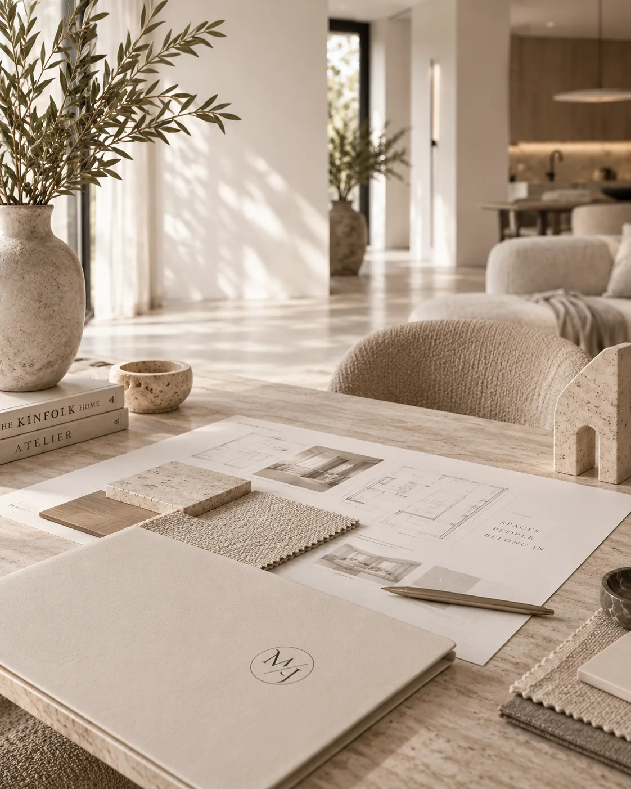
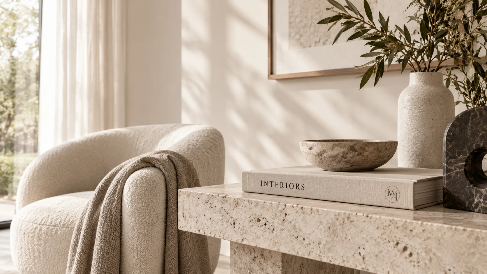
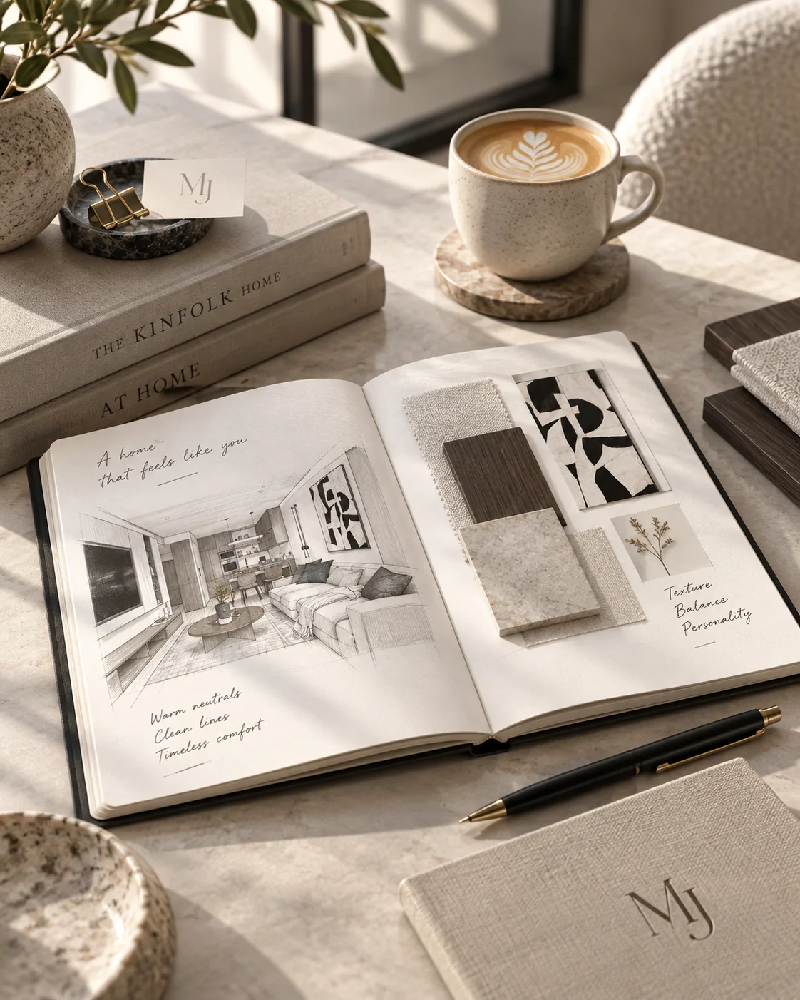
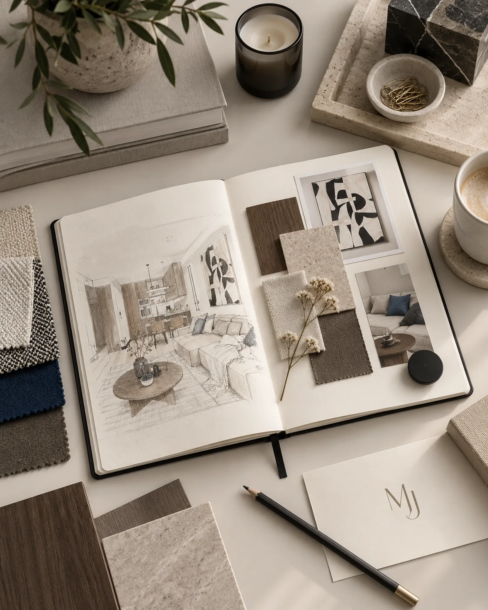
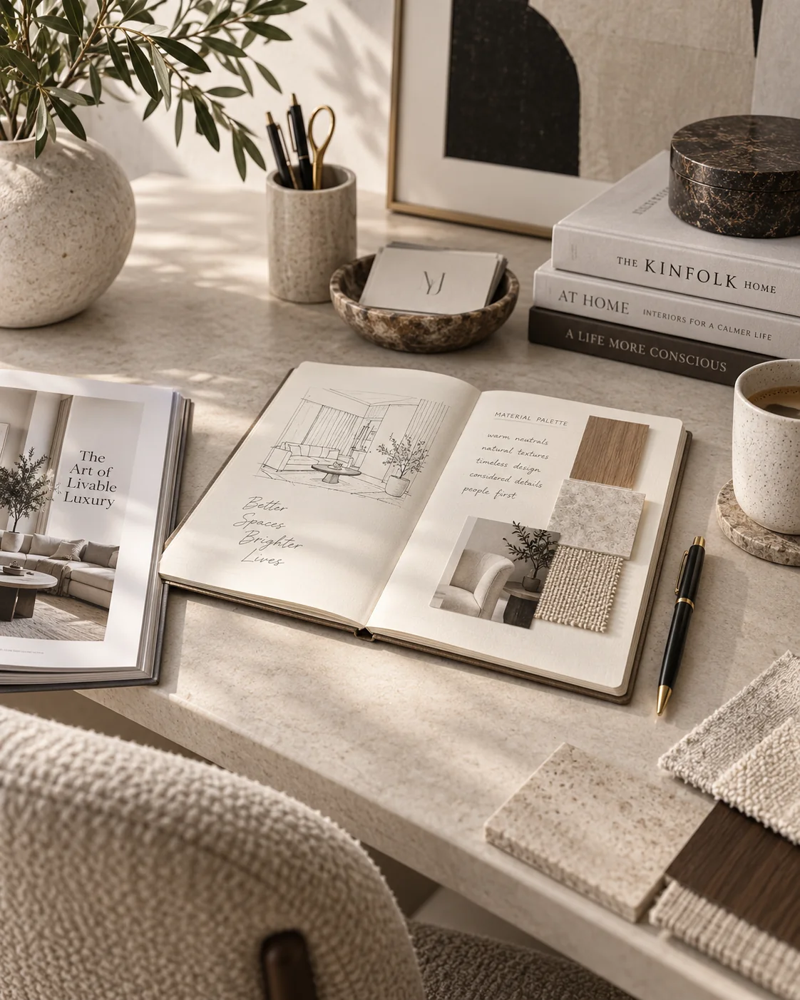

Projekt funkcjonalny
Planowanie układu wnętrza w formie rzutów 2D. Powstają warianty funkcjonalne, które porządkują komunikację, ergonomię, wyposażenie i — kiedy jest to możliwe — układ ścian.
Zapytaj o zakres
MAŁGORZATA JUSZKIEWICZ · ARCHITEKTURA WNĘTRZ
Każdy projekt zaczyna się od rozmowy — o sposobie życia, potrzebach, estetyce i możliwościach konkretnej przestrzeni.
Na początku porządkujemy funkcję, budżet i kierunek wnętrza. Później krok po kroku przechodzimy przez koncepcję, materiały, wyposażenie i dokumentację potrzebną do realizacji. Dzięki temu projekt pozostaje indywidualny, ale cały proces jest czytelny i uporządkowany.
ZAKRES WSPÓŁPRACY
Planowanie układu wnętrza w formie rzutów 2D. Powstają warianty funkcjonalne, które porządkują komunikację, ergonomię, wyposażenie i — kiedy jest to możliwe — układ ścian.
Zapytaj o zakresRozwinięcie funkcji o kierunek wizualny: materiały, meble, kolorystykę, wyposażenie i moodboard. W zależności od potrzeb zakres może zostać uzupełniony o wizualizacje wybranych pomieszczeń.
Poznaj możliwościPełne opracowanie wnętrza od funkcji i koncepcji po dokumentację wykonawczą: rzuty, widoki ścian, projekty zabudów, zestawienia materiałowe i elementy potrzebne do wycen.
PorozmawiajmyWsparcie na etapie realizacji: spotkania z wykonawcami, kontrola zgodności prac z projektem, konsultowanie zmian wynikających z warunków technicznych oraz pomoc przy koordynacji dostaw.
Zapytaj o nadzórProjekt zaczyna się od dobrego planu.
Funkcja, materiały, światło i detale układają się później w jedną spójną całość.WYBRANE REALIZACJE
Aktualne opinie są dostępne bezpośrednio w profilu Google.

OD KONCEPCJI DO REALIZACJI
Dobry projekt wnętrza nie kończy się na atrakcyjnym obrazie. Ma prowadzić przez kolejne decyzje — od układu i materiałów po światło, zabudowy oraz szczegóły wykonawcze.
BLOG · WKRÓTCE
W przyszłości znajdzie się tutaj blog pracowni — krótkie poradniki, odpowiedzi na najczęstsze pytania oraz materiały o funkcji, materiałach i procesie projektowym.

Co warto przygotować przed pierwszą rozmową i jakie decyzje porządkują dalszą pracę nad projektem.
Artykuł wkrótce
Dlaczego dobry układ wnętrza powinien powstać wcześniej niż lista mebli, kolorów i dekoracji.
Artykuł wkrótce
Jak budować spokojną, ponadczasową bazę wnętrza i gdzie warto postawić na jakość zamiast chwilowego trendu.
Artykuł wkrótceNAJCZĘSTSZE PYTANIA
Najważniejsze informacje przed rozpoczęciem projektu.
Od rozmowy o potrzebach, stylu życia, estetyce, budżecie i terminie. Następnie wykonywana jest wizja lokalna lub projekt powstaje na podstawie dostarczonych rzutów i wymiarów.
Tak. Zakres może zatrzymać się na etapie układu funkcjonalnego albo zostać później rozwinięty o koncepcję, materiały, wizualizacje i dokumentację wykonawczą.
Tak. Wizualizacje wybranych pomieszczeń mogą zostać przygotowane po zaakceptowaniu finalnego kierunku koncepcyjnego i służą do pokazania założeń wnętrza przed realizacją.
Tak. Nadzór może obejmować spotkania z wykonawcami, kontrolę realizacji założeń projektu, konsultowanie zmian technicznych oraz wsparcie przy logistyce materiałów i wyposażenia.
KONTAKT
Wiadomość z podstawowymi informacjami o inwestycji wystarczy, żeby rozpocząć rozmowę o zakresie, możliwościach i dalszych etapach współpracy.
SOCIAL MEDIA
Bądź na bieżąco.
Realizacje, kulisy pracy i aktualności z pracowni — więcej kadrów pojawia się na Instagramie i Facebooku.